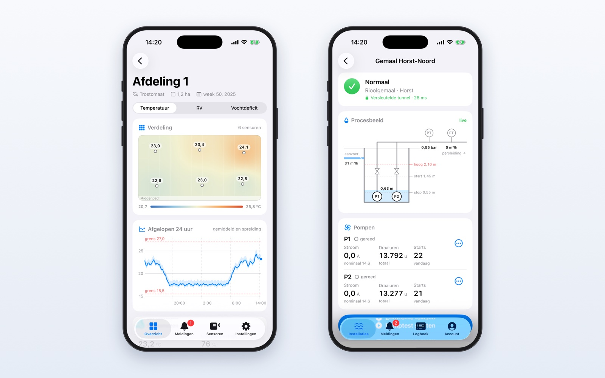

Van idee naar functionerend prototype, tot een schaalbaar en veilig systeem. Wij beheersen het volledige technische spectrum in eigen huis.

Schematisch ontwerp en PCB‑layout met toekomstbestendige componentkeuzes, gericht op de stap van concept naar prototype en doorontwikkeling naar product.

Embedded firmware, protocollen en besturingssoftware die hardware intelligent maakt en systemen laat samenwerken.

Maatwerk dashboards en applicaties die data omzetten in bruikbare inzichten: voor datavisualisatie, besturingsplatformen en online omgevingen.

Doordachte beveiliging voor dataplatformen en installaties op afstand, afgestemd op het beveiligingsprofiel van uw systeem.

Apps voor telefoon, tablet en browser die werkprocessen digitaliseren en installaties bereikbaar maken, afgestemd op de mensen die er dagelijks mee werken.